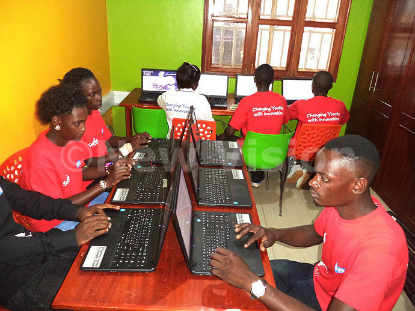
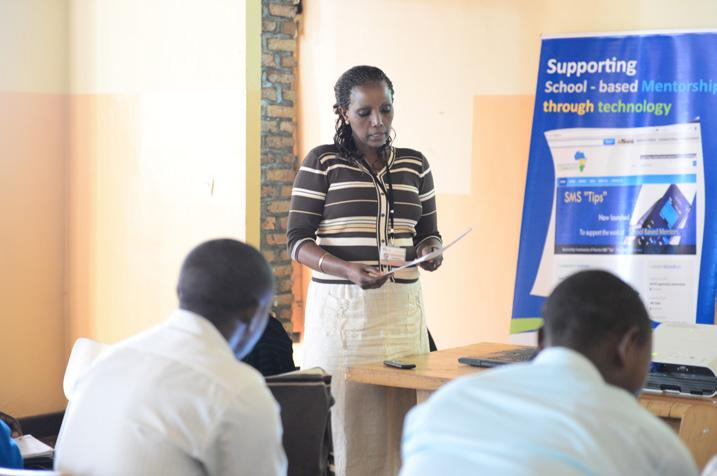

Prepared by: Reagan Otema
Email: rotema@byupathway.edu | Phone: +256772514889
SkillSprint Uganda
This name represents a youth centered digital learning platform aimed at empowering Ugandan youth with tech skills for the future.
This image captures young Ugandan learners actively engaged in a dynamic tech workshop. It symbolizes the mission of SkillSprint Uganda to create opportunities and build digital skills for the youth, empowering them to succeed in a technology-driven future.
The site provides digital learning resources, mentorship opportunities, and community engagement platforms tailored for young Ugandans seeking tech education and career growth.
This photo showcases a mentorship session where experienced professionals guide aspiring tech enthusiasts. SkillSprint Uganda aims to foster such relationships to ensure learners receive support, guidance, and encouragement to develop valuable tech skills and advance their careers.
This image highlights an active workshop event hosted by SkillSprint Uganda, emphasizing the hands-on learning approach. Events like these provide essential experiences where participants can network, gain new knowledge, and apply practical skills in a collaborative environment.
Two wireframe sketches are provided (not shown here):